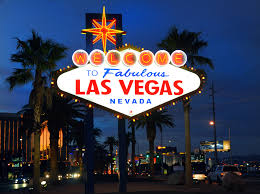

NEW YORK:

SAN FRANSISCO, CALIFORNIA-BAY AREA:
 This charming and picturesque West Coast city is the perfect getaway destination for couples, singles, or families. Famous sites, charming streets, beautiful views, and outdoor dining are all part of what makes San Francisco such a great place to visit. Take a cruise on San Francisco Bay, tour Alcatraz, drive over the Golden Gate Bridge, wander around Fisherman's Wharf, or hop on a street car to explore the city sites. Summer or fall is a wonderful time to visit, but the climate here is mild and any time of year is pleasant.
This charming and picturesque West Coast city is the perfect getaway destination for couples, singles, or families. Famous sites, charming streets, beautiful views, and outdoor dining are all part of what makes San Francisco such a great place to visit. Take a cruise on San Francisco Bay, tour Alcatraz, drive over the Golden Gate Bridge, wander around Fisherman's Wharf, or hop on a street car to explore the city sites. Summer or fall is a wonderful time to visit, but the climate here is mild and any time of year is pleasant.
LAS VEGAS:  This glittering city of lights in the desert holds a unique appeal, and one that has been attracting visitors for decades. Huge resort complexes, with all kinds of things to see and do at any time of year, have made this a destination that draws everyone, from want-to-be newlyweds who come here to say their vows, to families who just want to hang out around a pool. Entertainment options are endless, with some of the music industry's top stars calling Las Vegas home and playing to packed audiences every night. When you've had your fill of the city, there is plenty to explore in the surrounding area, with the Grand Canyon, Death Valley National Park, and Hoover Dam all within easy day-tripping distance.
WASHINGTON DC:
 Washington, D.C. is the US capitol and home to some of the most famous sites and national treasures in America, from the White House and the Capitol Building to the Smithsonian museums. This city should be on everyone's itinerary of the East Coast. In the spring, the Cherry Blossom Festival is a beautiful time to visit, when the trees are in full bloom. Fall is also a good time, when the hot summer temperatures have cooled off enough to make walking around outside very comfortable and the rush of the busy summer season has passed. In winter, the crowds are definitely smaller, and the city is stunning after a fresh snowfall.
Washington, D.C. is the US capitol and home to some of the most famous sites and national treasures in America, from the White House and the Capitol Building to the Smithsonian museums. This city should be on everyone's itinerary of the East Coast. In the spring, the Cherry Blossom Festival is a beautiful time to visit, when the trees are in full bloom. Fall is also a good time, when the hot summer temperatures have cooled off enough to make walking around outside very comfortable and the rush of the busy summer season has passed. In winter, the crowds are definitely smaller, and the city is stunning after a fresh snowfall.
LOS ANGELES, SOUTHERN CALIFORNIA:
 Southern California has a culture all of its own, and Los Angeles is the epicenter of this unique area. The city has always been associated with glamour, with the suburbs of Hollywood, Beverly Hills, and Bel Air dominating pop culture. There are all kinds of vacation possibilities in the Los Angeles area. Hollywood is a must for movie lovers, families come to experience nearby Disneyland, and shoppers will find plenty of possibilities. If you are looking for a laid-back beach scene, head to Venice Beach. For an interesting natural history experience be sure to visit the Page Museum and La Brea Tar Pits to see fossil remains of prehistoric animals that roamed this area 40,000 years ago.
Southern California has a culture all of its own, and Los Angeles is the epicenter of this unique area. The city has always been associated with glamour, with the suburbs of Hollywood, Beverly Hills, and Bel Air dominating pop culture. There are all kinds of vacation possibilities in the Los Angeles area. Hollywood is a must for movie lovers, families come to experience nearby Disneyland, and shoppers will find plenty of possibilities. If you are looking for a laid-back beach scene, head to Venice Beach. For an interesting natural history experience be sure to visit the Page Museum and La Brea Tar Pits to see fossil remains of prehistoric animals that roamed this area 40,000 years ago.